Key pointsWhat the pocket guide says you must know, and when.
This page follows the Recruit Training Pocket Guide revised October 2018. Names, phone numbers and requirements can change, so confirm anything important with your recruiter or Company Commander. The up-to-date version is kept on the Cape May SharePoint site.
Learn by week
The guide lists every topic with the week you should start learning it, the week it is required, and the probation week. Memorize as much as you can before you arrive.
Fill in the starboard column
On the chain of command page, you fill in the names yourself when your Company Commander tells you to.
Report problems
Suicide warning signs, hazing, bullying and sexual assault must be reported. The numbers are in this guide.
Emergency: 911
The Officer of the Day (OOD) and Regimental Duty Officer (RDO) also have duty phones listed under Chain of command.
Required knowledge by week
| Topic | Start | Required | Probation |
|---|---|---|---|
| Chain of Command | Wk 01 | Wk 02 | Wk 03 |
| Required Telephone Numbers | Wk 01 | Wk 02 | Wk 03 |
| 11 General Orders of the Sentry | Wk 01 | Wk 02 | Wk 03 |
| Coast Guard Pay Grades | Wk 02 | Wk 02 | Wk 03 |
| Coast Guard Collar Devices | Wk 02 | Wk 02 | Wk 03 |
| Coast Guard Sleeve Insignia | Wk 02 | Wk 02 | Wk 03 |
| Coast Guard Shoulder Boards | Wk 02 | Wk 02 | Wk 03 |
| Coast Guard Enlisted Ratings | Wk 02 | Wk 02 | Wk 03 |
| Five types of Followers | Wk 02 | Wk 03 | Wk 03 |
| Coast Guard Ethos | Wk 02 | Wk 03 | Wk 04 |
| Force Protection Conditions | Wk 03 | Wk 04 | Wk 04 |
| Flags / Pennants / Knots / Parts of Line | Wk 03 | Wk 04 | Wk 04 |
| Firefighting Basics | Wk 03 | Wk 04 | Wk 04 |
| Piece Nomenclature | Wk 03 | Wk 04 | Wk 04 |
| Coast Guard Roles and Missions | Wk 03 | Wk 04 | Wk 05 |
| Grooming Standards | Wk 04 | Wk 05 | Wk 05 |
| Uniform Regulations | Wk 04 | Wk 05 | Wk 05 |
| Enlisted Evaluation System | Wk 04 | Wk 05 | Wk 05 |
| Semper Paratus | Wk 06 | Wk 07 | Wk 07 |
The columns are the week numbers printed in the pocket guide ("Start / Required / Probation"). The guide does not define "Probation". Ask your Company Commander what it means for you. Pocket guide p. 15
Required knowledge trackerCheck off each item as you learn it. Grouped by the week it is required. Your progress is saved in this browser.
Required by week 2
Required by week 3
Required by week 4
Required by week 5
Required by week 7
Background
Coast Guard history History
The Coast Guard is a military, maritime, multi-mission service operating within the Department of Homeland Security, dedicated to the safety and security of the American people.
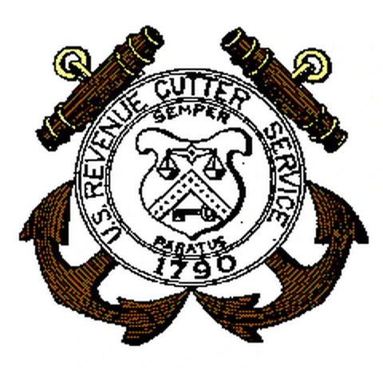
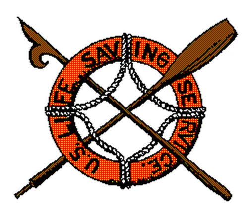
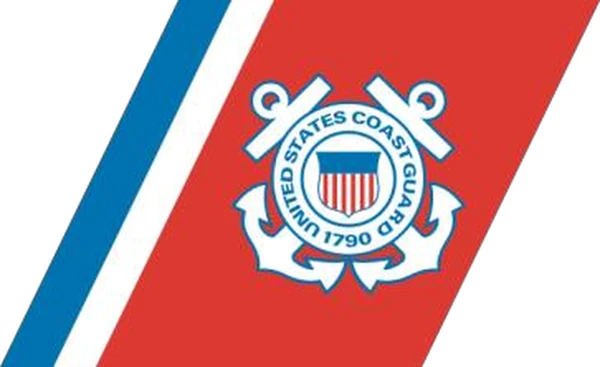
Department of Homeland Security seal, Revenue Cutter Service emblem, Life-Saving Service emblem, and the Coast Guard racing stripe.
Timeline
| Date | Event |
|---|---|
| Aug 4, 1790 | Alexander Hamilton (the father of the Coast Guard) establishes the U.S. Revenue Cutter Service under the Department of the Treasury. Its first laws authorized ten cutters to enforce tariff laws and prevent smuggling. |
| 1915 | The Revenue Cutter Service merges with the U.S. Life-Saving Service. President Woodrow Wilson signs the "Act to Create the Coast Guard." This is the modern Coast Guard. |
| 1939 | The U.S. Lighthouse Service is added. |
| 1942 | The Bureau of Marine Inspection and Navigation is transferred to the Coast Guard. |
| 1967 | The Coast Guard moves from the Treasury to the Department of Transportation. |
| 2003 | The Coast Guard moves to the new Department of Homeland Security, after the September 11, 2001 attacks. |
The original ten cutters were: Massachusetts, Scammel, Active, Eagle, Diligence, Argus, Vigilant, Virginia, South Carolina and General Greene.
The five armed forces
The five uniformed services that make up the Armed Forces are defined in 10 U.S.C. 101(a)(4): the Army, Navy, Air Force, Marine Corps and Coast Guard.
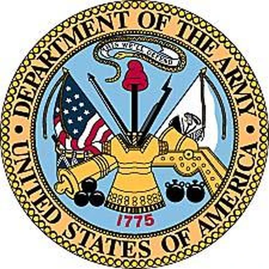
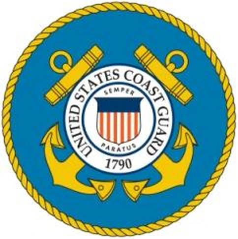
14 U.S.C. 1: the Coast Guard (established January 28, 1915) is a military service and a branch of the armed forces at all times. It is a service in the Department of Homeland Security, except when operating as a service in the Navy.
Roles and missions Week 4
The Coast Guard has a unique blend of military, humanitarian and civilian law enforcement capabilities. It has three roles.
Maritime safety
Protecting the lives and safety of Americans through mishap prevention: standards and regulations, plan reviews and compliance inspections, and safety programs for mariners. Two primary missions:
- Marine Safety
- Search and Rescue
Maritime security
Enforcing, or assisting in enforcing, federal laws and treaties on waters under U.S. jurisdiction. The Coast Guard has civil authority to board any vessel subject to U.S. jurisdiction and, once aboard, may inquire, examine, inspect, search, seize and arrest. Four primary missions:
- Illegal Drug Interdiction
- Undocumented Migrant Interdiction
- Defense Readiness
- Ports, Waterways, and Coastal Security
Maritime stewardship
Protecting natural resources. America's marine waters and ecosystems are vital to the nation's health and economy, and contain one-fifth of the world's fishery resources. Five primary missions:
- Living Marine Resources
- Marine Environmental Protection
- Fisheries
- Aids to Navigation (ATON)
- Ice Operations
Coast Guard Ethos Week 3
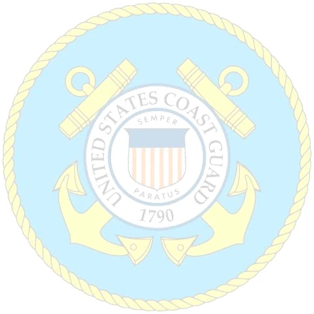
I am a Coast Guardsman.
I serve the people of the United States.
I will protect them.
I will defend them.
I will save them.
I am their Shield.
For them I am Semper Paratus.
I live the Coast Guard Core Values.
I am proud to be a Coast Guardsman.
We are the United States Coast Guard.
The Core Values are Honor, Respect and Devotion to Duty.
Safety and conductProtect each other. These pages explain what to watch for and who to tell.
Suicide prevention Safety
While we protect the citizens of the United States, we must also protect each other. Be aware of the warning signs, and if a shipmate is in pain, help your shipmate.
If someone is in immediate danger, call 911.
Suicide warning signs
- Appears depressed, sad, fearful, hopeless, poor appetite, poor sleep
- Threatens suicide
- Talks about wanting to die or sleep the pain away
- Feeling anxious, agitated, frequent nightmares, or unable to sleep (or sleeping all the time)
- Feeling trapped, like there is no way out
- Withdrawing from family, friends, usual activities, society
- Shows changes in behavior, appearance or mood
- Abuses drugs or alcohol
- Experienced significant loss or trauma, NJP or legal accident
- Deliberately injures self
What to do: be the ACE
A: Ask
Do not be afraid to ask "Are you thinking about hurting yourself?"
C: Care
Show you care and listen.
E: Escort
Do not leave the person alone. Get them to help.
Provide A.I.D.
- Ask. Ask the question directly.
- Intervene immediately.
- Don't keep it a secret.
Preserve L.I.F.E.
- Locate help: Company Commander, instructor or permanent party member.
- Inform someone in your chain of command.
- Find someone to stay with the person. Do not leave the person alone.
- Expedite: get help as soon as possible. Call 911.
Hazing and bullying Conduct
Hazing is any conduct in which one military member or employee, regardless of Service or rank, unnecessarily causes another to suffer or be exposed to an activity that is cruel, abusive, oppressive or harmful. No service member may engage in hazing or consent to being hazed. Soliciting or coercing another to conduct such activity also counts. The policy applies to all personnel at all times, on or off duty, at sea or ashore, on or off base.
Examples of hazing
- Abusive or mean-spirited tricks meant to ridicule, humiliate or ostracize
- "Tacking on crows"
- Group wrestling matches targeting a particular member
- Forcibly cutting or shaving hair
- Handcuffing or otherwise securing a member to a fixed object or another member
- Striking, slapping, branding, tattooing or painting another
Bullying is abusive conduct by a military member or members that harms a military member or any other person, physically or psychologically, without a proper military or governmental purpose and with the intent to exclude the member. It is threatening, humiliating or intimidating. It can also be work interference, undermining performance, or verbal abuse.
Examples of bullying
- Physically striking another or threatening to
- Intimidating, teasing or taunting
- Oral or written berating meant to belittle or humiliate
- Encouraging another to engage in illegal, harmful, demeaning or dangerous acts
- Abusive or malicious tricks such as branding, handcuffing, duct taping, tattooing, shaving, greasing or painting
- Forced consumption of food, alcohol, drugs or any other substance
- Degrading or damaging a person, their property or their reputation
How to report
Report actual or suspected hazing or bullying to your Company Commander(s) without fear of reprisal. If you cannot talk to them, go to any of these:
- Instructor
- Section Commander
- Chaplain
- Battalion Commander
- Command Master Chief
- Work Life staff
On or off duty, in or out of uniform, there is no place in the Coast Guard for dehumanizing treatment. Every incident is investigated and appropriate disciplinary action is taken.
Sexual assault response resources Safety
The Coast Guard has a zero tolerance policy on sexual assault. There are two reporting options for all Coast Guard personnel.
Restricted (confidential)
Lets a victim confidentially disclose details and receive advocacy, medical treatment and counseling without starting an official investigation or notifying the command. It is restricted only if you report to one of: the Sexual Assault Response Coordinator (SARC), the Family Advocacy Specialist (FAS) / backup SARC, a Unit Victim Advocate (VA), TRACEN Medical Clinic staff, or a Chaplain.
Unrestricted
For a victim who wants medical treatment, counseling and/or an official investigation. It triggers an immediate formal investigation by trained criminal investigators and the full range of protections. It is the only option that may lead to offenders being held accountable. Report through your company commander, an instructor, TRACEN Police or a civilian CG employee.
If you tell anyone other than a SARC, FAS, VA, medical staff or a chaplain, the report is Unrestricted. Anyone who receives a report, hears about, suspects or witnesses a sexual assault shall report it. No bystanders: take action.
Resources
| Resource | Contact |
|---|---|
| SARC (work) | (609) 898-6451 |
| Family Advocacy Specialist / backup SARC (work) | (609) 898-6925 |
| TRACEN Medical Clinic (duty and after hours) | (609) 898-6610 / 6366 |
| Chaplain | (609) 898-6239 |
| Cape Regional Medical Center | (609) 463-2000 |
| CG SUPRT | 855-CGSUPRT (855-247-8778), www.cgsuprt.com |
| Safe Helpline (24/7) | 877-995-5247, chat at www.safehelpline.org, or text your location to 55-247 |
| Emergency, RDO/OOD, TRACEN Police | 911 |
Numbers are as printed in the 2018 pocket guide. Confirm current numbers with your Company Commander.
Chain of command and orders
Chain of command and phone numbers Week 2
You fill in the "starboard" column with names when your Company Commander tells you to. Know each person's rank and name.
| Position | Fill in |
|---|---|
| Commander in Chief | President |
| Secretary of Homeland Security | The Honorable |
| Commandant of the Coast Guard | Admiral |
| Deputy Commandant for Mission Support (DCMS) | ________________ |
| Commander, Force Readiness Command (FORCECOM) | ________________ |
| Commanding Officer, TRACEN Cape May (CO) | ________________ |
| Executive Officer (XO) | ________________ |
| Training Officer (TO) | ________________ |
| Regimental Officer (RO) | ________________ |
| Battalion Officer (BO) | ________________ |
| Battalion Commander (BC) | ________________ |
Important phone numbers
| Contact | Number |
|---|---|
| Emergency | 911 |
| Officer of the Day (OOD) | Cell (609) 780-1346 |
| Regimental Duty Officer (RDO) | Cell (609) 374-4388, ext. X6905 |
| Sexton Hall | ext. X6971 |
Also know your own chain below the Battalion Commander: Section Commander, Lead Company Commander and Company Commander. Pocket guide p. 16
11 General Orders of a sentry Week 2
- To take charge of this post and all government property in view.
- To walk my post in a military manner, keeping always on the alert, and observing everything that takes place within sight or hearing.
- To report all violations of orders I am instructed to enforce.
- To repeat all calls from posts more distant from the guard house than my own.
- To quit my post only when properly relieved.
- To receive, obey, and pass on to the sentry who relieves me all orders from the commanding officer, field officer of the day, officer of the day, and officers and petty officers of the watch.
- To talk to no one except in the line of duty.
- To give the alarm in case of fire or disorder.
- To call the petty officer of the watch in any case not covered by instructions.
- To salute all officers and all colors and standards not cased.
- To be especially watchful at night, and during the time for challenging, to challenge all persons on or near my post, and to allow no one to pass without proper authority.
Rates and ranksRank is the plain-language name for an officer (also called grade), for example Admiral (ADM). Rate is the plain-language name for an enlisted person, which identifies their occupation and pay grade, for example Boatswain's Mate Second Class (BM2). Each picture shows the collar device, shoulder board and sleeve insignia, from top to bottom.
Officer ranks (commissioned officers) Week 2
Flag officers
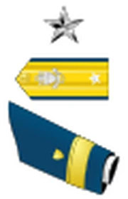
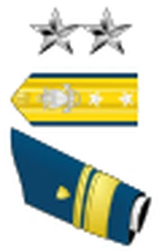
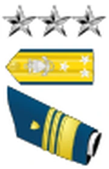
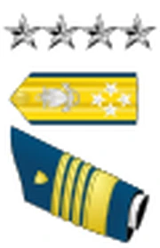
Senior officers
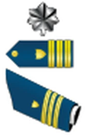
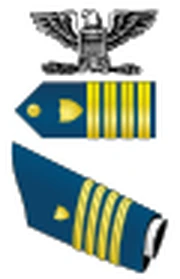
Junior officers
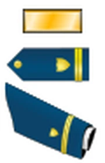
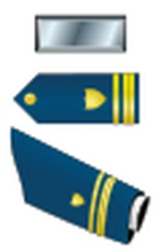
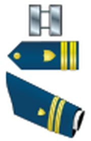
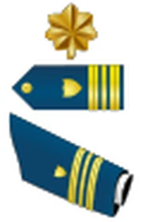
Warrant officers
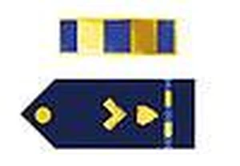
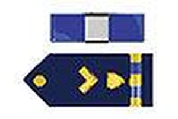
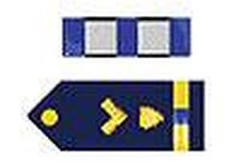
Enlisted grade structure Week 2
Senior enlisted command

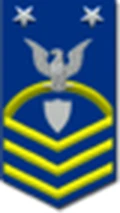

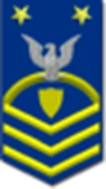
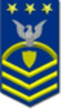
Senior enlisted
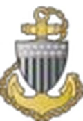
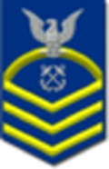
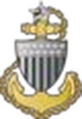
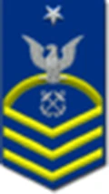
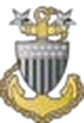
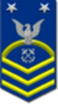
Junior enlisted
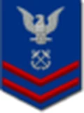
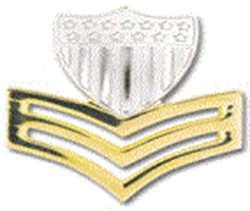
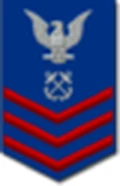
Non-rate
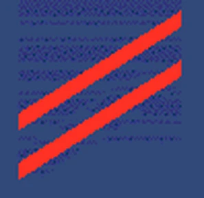
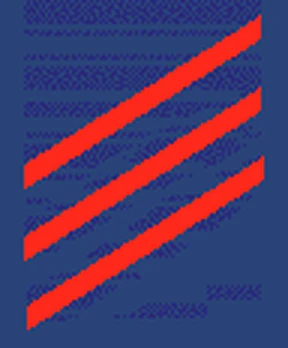
For the non-rate grades the two pictures show the sleeve stripes: white for deck (seaman) and red for engineering (fireman), as printed in the guide.
Coast Guard enlisted ratings Week 2
A rating is the plain-language name for an enlisted person's occupational specialty. Only enlisted personnel have a rating.
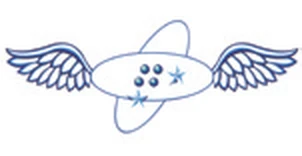
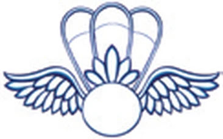
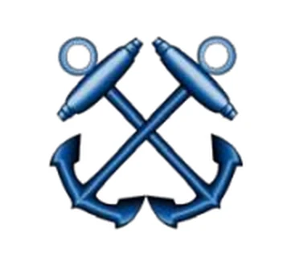
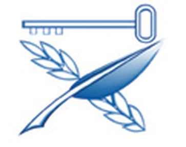
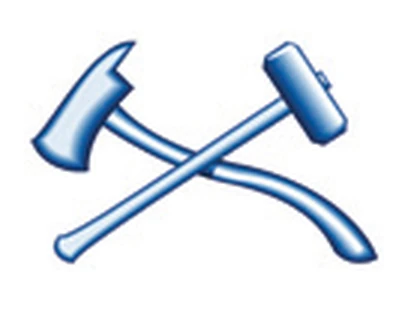
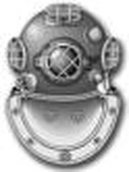
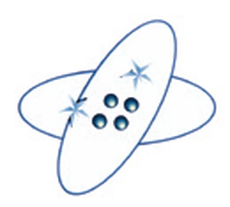
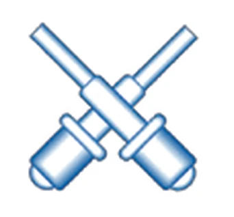
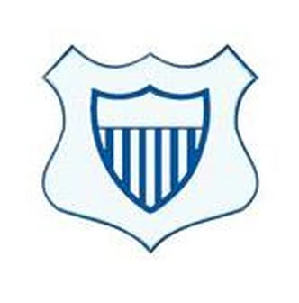
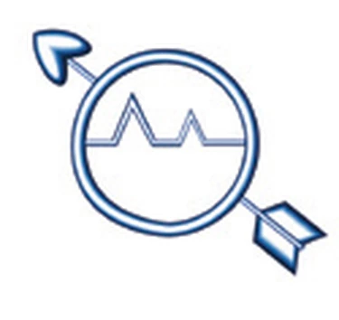
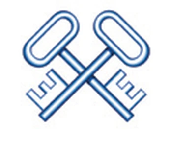
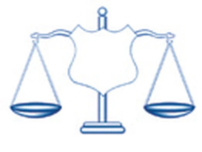
Standards
Force protection conditions Week 4
Force Protection Condition (FPCON) is a terrorism threat system that identifies what security measures should be taken in response to various terrorism threats. Higher FPCON levels add restrictions, such as limiting who may enter the installation, and more Random Anti-terrorism Measures (RAM).
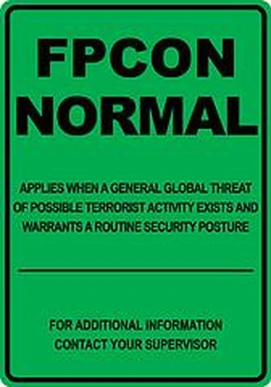
Routine security posture
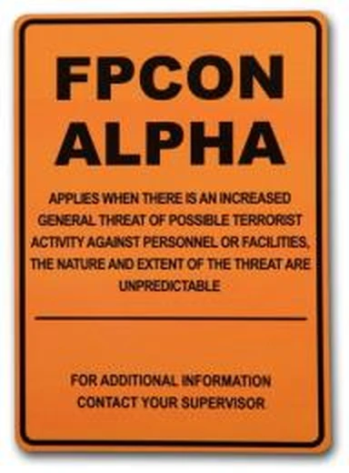
Possible terrorist activity
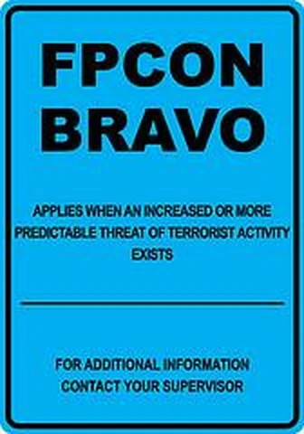
Predictable terrorist threat activity exists
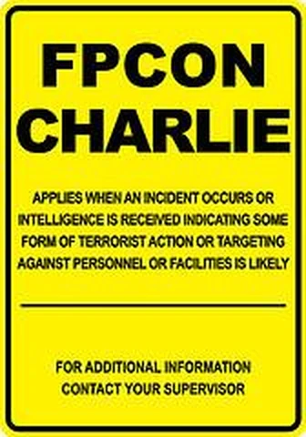
Terrorist targeting against personnel and facilities is imminent
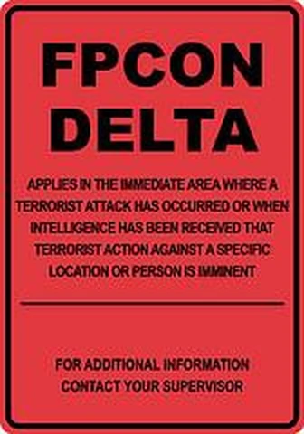
Terrorist action against a specific location imminent
Followers Week 3
Followers fall into five types, based on how actively and how independently they think.
| Type | Description |
|---|---|
| Sheep | The least desirable type of follower. Passive and dependent. |
| Yes People | More active and able to think critically and independently, but choose not to. |
| Alienated | Can think critically and are independent but, like sheep and yes people, are also passive. |
| Survivors | Watchers. If it works for others, they will try it. |
| Effective | Proactive and respectful of their leader's authority. |
Followers chart: vertical axis runs from dependent/uncritical to independent/critical thinking; horizontal axis from passive to active. Effective sits in the active, independent quadrant, with survivors in the middle.
Grooming standards Week 5
Grooming standards are based on neatness, cleanliness, safety, military image and appearance. Hair overall must be clean, well-groomed and neat. Hair coloring, if used, must look natural. Hair must not touch the eyebrows when groomed, or extend below the front of properly worn headgear.
Men
Hair above the ear and around the neck is tapered. Hair on the back of the neck must not touch the collar. The bulk of hair must not be more than 1½ inches from the scalp. Sideburns shall not extend below a point level with the bottom of the ear opening.
Women
Haircuts and styles present a balanced appearance. The hair may touch but not fall below the bottom edge of the back of the collar. All ponytails and long hair, including braids, must be neatly and inconspicuously fastened, pinned or secured to the head. Bun bulk is no more than 3 inches.
Hairpins, small barrettes, small interlocking butterfly clips, elastic bands, scrunchies and small combs in black, dark blue, brown, silver, metallic gold or a color similar to the individual's hair are authorized.
Uniform regulations Week 5
Operational Dress Uniform (ODU)
A general-purpose, everyday uniform for any situation that does not require a dress uniform. It is authorized for commuting in a private vehicle between work and home, including brief non-social stops such as for gas.
- ODU shirt: sleeves rolled accordion style with only the cuff showing, or down as prescribed
- ODU trousers: bloused on the safety boot between the second and third eyelet
- Blue T-shirt: crew neck
- Footwear: 8 to 10 inch safety boot with black socks
- Belt: black riggers belt, bitter end behind but not past the first belt loop on the left
- Headgear: ball cover, watch cap or cold weather cap as prescribed
- Jacket: Foul Weather Parka (FWP), FWP liner
Tropical Blue
Worn to compensate for climate variations. It is not acceptable at any event where a coat and tie would be required.
- Short sleeve dress shirt: the female version must be worn with female trousers
- Dress pant: wash and wear or standard dress pant
- Belt: 1¼ inch black web belt with brass belt buckle
- Footwear: black oxfords; females may wear pumps
- Headgear: combination cover or garrison cap as prescribed
- Ribbons: all, top three, or any nine ribbons, worn on the left side, ¼ inch above the pocket
- Name tag: worn on the right side, ¼ inch above the pocket
- Collar devices: E-4 and up
- Jacket: trench coat, windbreaker, FWP
Service Dress Blue "Bravo"
Suitable on all occasions when wearing a uniform is prescribed or appropriate.
- Long sleeve dress shirt
- Dress pant: wash and wear is not authorized
- Belt: 1¼ inch black web belt with brass belt buckle
- Tie: men wear a blue neck tie; women wear an overlapping blue tie tab
- Footwear: black oxfords; females may wear pumps
- Headgear: combination cover and garrison cap
- Ribbons: all, top three, or any nine ribbons, worn on the left side, ¼ inch above the pocket
- Name tag: worn on the right side, ¼ inch above the pocket
- Collar devices: E-4 and up, worn on the dress shirt
- Sleeve insignia: E-4 and up, on the left sleeve
- Jacket: trench coat
Enlisted evaluation system Week 5
The non-rate Enlisted Evaluation Report (EER) for E-2 and E-3 is broken into 4 factors with 9 competencies that evaluate your performance during the marking period. Each is scored from 1 (lowest) to 7 (highest).
| Factor | Competencies |
|---|---|
| Military | Military bearing; customs, courtesies and traditions |
| Performance | Quality of work; commitment |
| Professional qualities | Decision making and problem solving; military readiness; self-awareness and learning |
| Leadership | Respect for others; followership |
Conduct: the degree to which the member adhered to military and civilian regulations.
Recommendation for advancement
| Mark | Meaning |
|---|---|
| Ready | Deemed ready to advance to the next pay grade. |
| Not Ready | Performing in the current pay grade but not ready for the responsibilities of the next. |
| Not Recommended | Negative conduct or poor performance; should not be allowed to advance. |
Seamanship
Common nautical terms Learn
| Term | Meaning |
|---|---|
| Aft | Towards the rear |
| Aloft | Above the ship's uppermost solid structure, overhead or high above |
| Alongside | By the side of the pier or ship |
| Awash | Sitting so low in the water that water is constantly washing across the top surface |
| Beam | Greatest athwartships width of a vessel |
| Billet | A crew member's assigned duties within the ship's organization |
| BMOW | Boatswain's Mate of the Watch: ensures all watches are properly manned and in order |
| Bow | The front of the ship |
| Brow | A moveable ladder or ramp used to board a vessel from a dock or pier |
| Centerline | Imaginary line running from the ship's bow to stern |
| Check | To slack off slowly, to ease off a line a little |
| Davit | Shipboard crane that can be swung out over the side |
| EOW | An officer in charge of the engineering department while on watch |
| Fast | Snugly secured |
| Fathom | A six foot unit of length |
| Fender | Equipment such as an inflated ball that goes between the vessel and another object to absorb shock and prevent damage |
| Fore | Towards the bow of the ship |
| Forecastle | Upper deck in the forward part of the ship, pronounced "FOKE-sul" |
| Gunwale | Upper edge or rail of a ship or boat's side, pronounced "GUN'nle" |
| Hawser | Large line |
| Inboard | Toward the center of the ship |
| Keel | Center of the hull. Lowest in the water, where weight is most carried |
| Lee | Side of the vessel sheltered from wind |
| Mast | Vertical pole that may have a sail or rigging, or antennas for powerboats |
| Outboard | Away from the center of the ship |
| Part | To break, as of a line |
| Port | Left side of the ship from the perspective of looking forward |
| Scullery | Compartment for washing and sterilizing eating utensils |
| Starboard | Right side of the ship from the perspective of looking forward |
| Stern | Back of the vessel |
| Strike | Lower or bring down |
| Turn to | An order to begin work |
| Void | An empty compartment below decks |
| Wake | The track left in the water behind a ship |
| Windward | Side of the vessel the wind is coming from |
Flags and pennants Week 4
Five basic knots and parts of a line Week 4
Parts of a line
Firefighting basics Week 4
Classes of fire
| Class | Fuel | Characteristics |
|---|---|---|
| A (Alpha) | Ordinary combustible materials such as wood, paper, plastics | White or grey smoke. Extinguish with: water, AFFF |
| B (Bravo) | Combustible liquids such as gasoline, diesel, paints, fuels, solvents, grease | Black or brown smoke. Extinguish with: Halon, PKP extinguisher, AFFF |
| C (Charlie) | Energized electrical equipment | Blue or white smoke. Extinguish with: CO2 extinguisher; safely secure the source of the electricity |
| D (Delta) | Combustible metals such as magnesium or titanium | Smoke color varies with the metal burned. Option: jettison (push overboard); advanced training needed |
Fire tetrahedron
The fire tetrahedron is a four-sided figure showing the four elements of flaming combustion: heat, oxygen, fuel and the chemical chain reaction. If any side is removed, flaming combustion stops and the fire goes out.
The combining process of fuel, heat and oxygen in the proper amounts to sustain flaming combustion or a fire.
Weapons and song
M-16 nomenclature Week 4
Recite the piece nomenclature in order, starting with "My piece nomenclature is..." and ending with "My piece nomenclature is complete."
Piece nomenclature, in order
- Flash suppressor
- Barrel
- Front sight
- Hand guard
- Slip ring
- Carrying handle
- Rear sight
- Charging handle
- Ejection port dust cover
- Magazine release
- Forward assist
- Stock
- Heel of the butt
- Buttcap
- Toe of the butt
- Pistol grip
- Selector lever
- Trigger
- Trigger guard
- Magazine well
- Magazine catch
- Bolt catch / bolt release
- Bayonet lug
- Treat all firearms as if they are loaded.
- Always maintain proper muzzle control.
- Keep finger off the trigger until on target and ready to shoot.
- Know your target and what is beyond it.
Semper Paratus Week 7
"Semper Paratus" is the Coast Guard's official march and is required knowledge by week 7 (you start learning it in week 6). The pocket guide prints all three verses and the chorus. The words are not copied here, so open the pocket guide to learn them.
Source
Sources
- Recruit Training Pocket Guide, Training Center Cape May (USCG), revised October 2018: all content and images on this page.
- Also see the Coast Guard Helmsman guide for the arrival and pre-bootcamp checklist.
Pictures are taken from the pocket guide, a U.S. Coast Guard publication. The blank "Notes" pages and the Semper Paratus lyrics are not reproduced. The latest version of the pocket guide and other Cape May materials are kept on the TRACEN Cape May SharePoint site (Recruit Training, General folder).